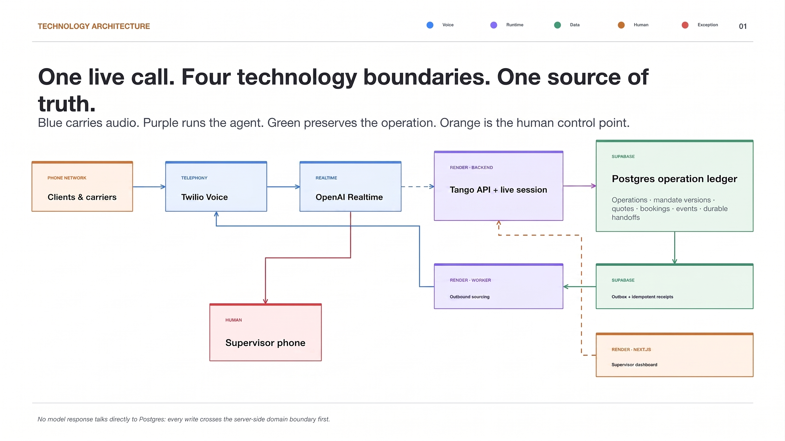
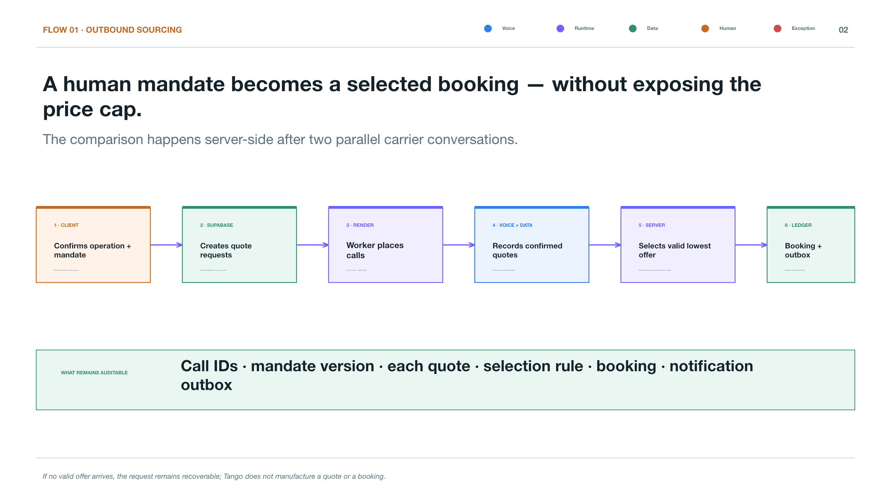
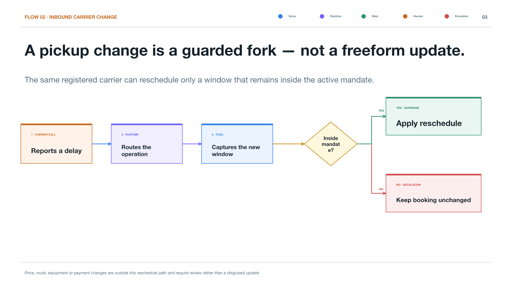
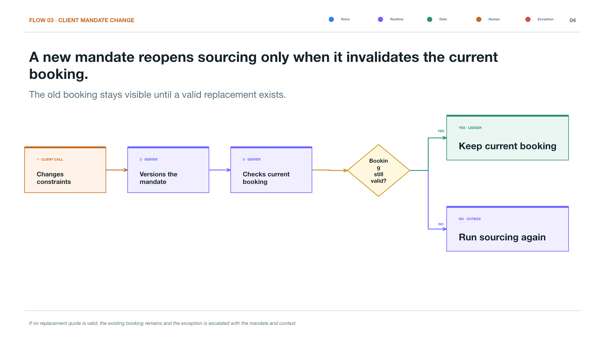
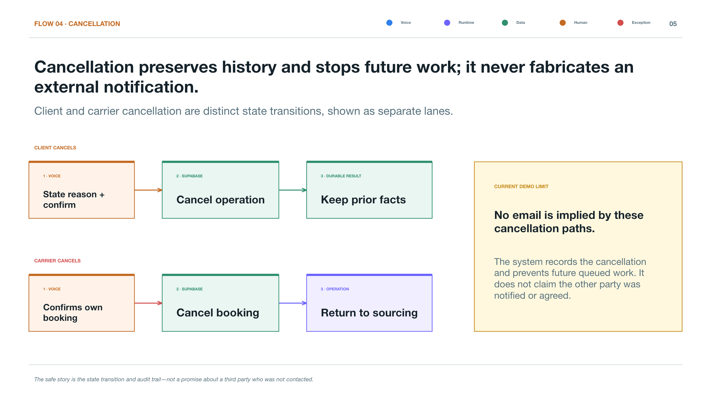
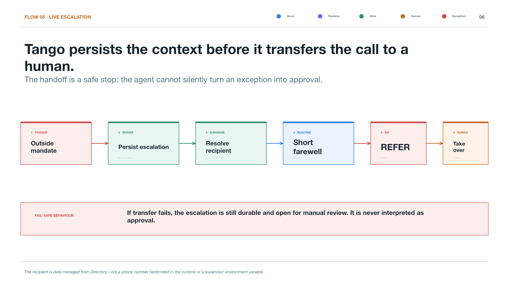

A carrier asks to move a booking outside the active mandate.
The backend rejects an out-of-bounds commitment even if the voice agent is willing to negotiate.
Escalation createdcaller transferred
We built a solution that allows you to scale your company while improving control, auditability, and overall efficiency.
Voice, realtime orchestration, server-side validation and durable data each have a specific boundary. No single conversational turn can silently become an operational commitment.

The worker makes the calls; the backend validates the decision and emits an auditable handoff.
Quotes can move the conversation forward. A confirmed booking only follows mandate validation.

The inbound leg resolves the operation, verifies the authority, then changes or escalates.
When the requested change falls outside the active authority, the call moves to a human rather than making an unsafe commitment.

The current version determines what Tango may negotiate; the prior version remains in the ledger.
A mandate change is durable, traceable and immediately governs subsequent sourcing decisions.

Tango records who requested it, evaluates the current booking and leaves a complete trace for the supervisor.
Every cancellation preserves the requester, the decision and the downstream communication.

The system creates an escalation, resolves the configured active recipient and transfers the caller by SIP REFER.
Escalation is live, but the destination remains controlled by durable, editable operational data.

These are pressure tests, not happy-path footnotes. Each maps to durable state, a bounded decision, or a human handoff.
The backend rejects an out-of-bounds commitment even if the voice agent is willing to negotiate.
Escalation createdThe new mandate is versioned; subsequent decisions read the new authority instead of overwriting history.
New mandate versionThe outbox and idempotent receipts let the worker resume without duplicating a booking or losing the event.
Safe retryThe outbound destination is read from the managed handoff directory, so the active recipient takes the call.
Live directory lookup